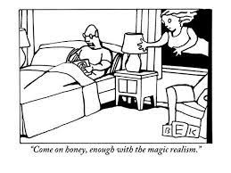
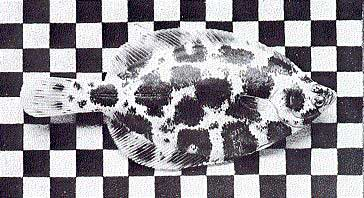
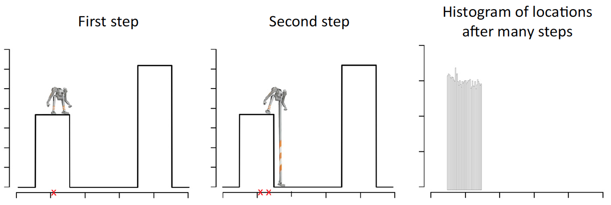
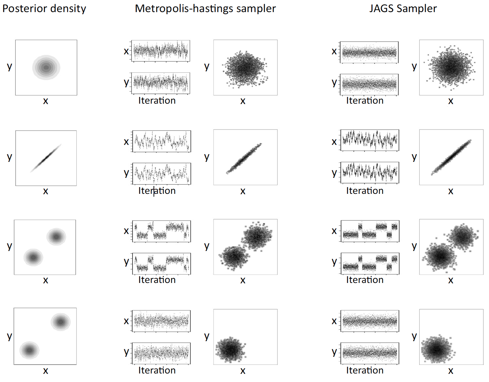
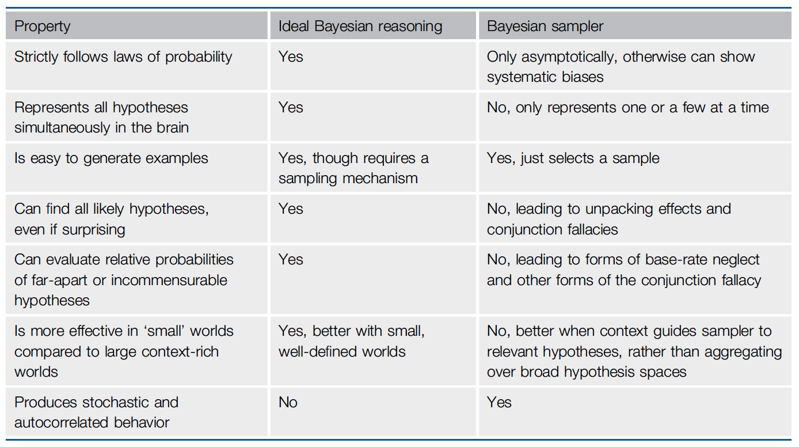
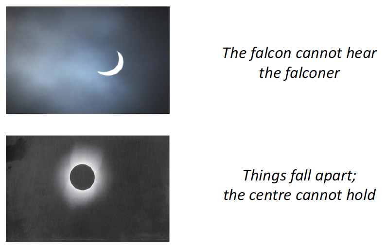
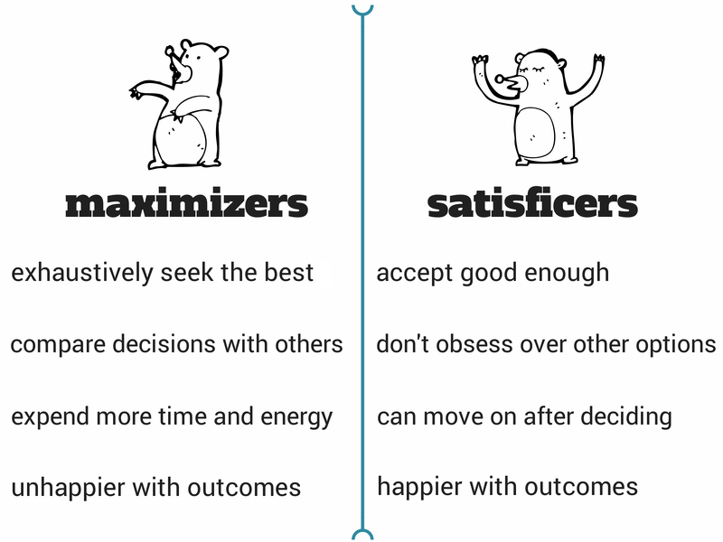
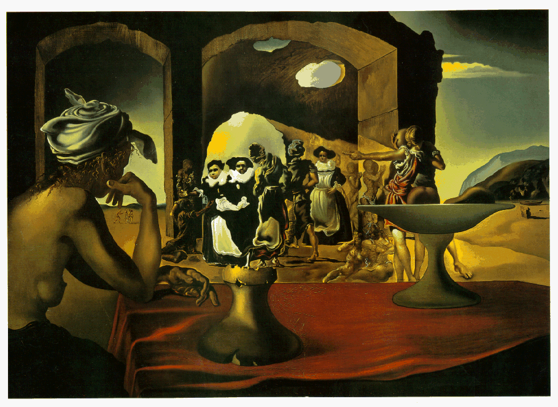
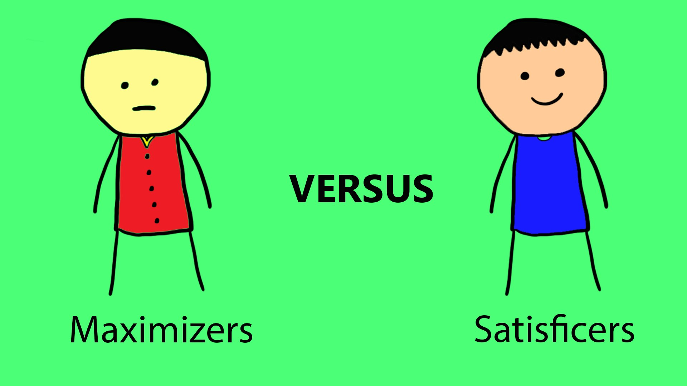
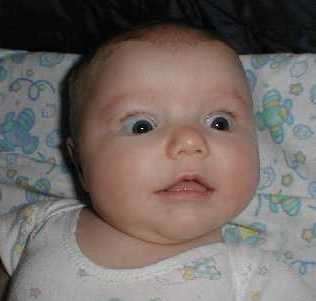

Week 13: advanced topics I
Lecture 13.2: real-world Bayes

real-world Bayes

Getting real about being Bayesian (an algorithmic take):
Bayesian brains without probabilities, A. N. Sanborn and
N. Chater, Trends in Cognitive Sciences 20:883-893 (December 2016).
Bayesian intractability
Notwithstanding the empirical success of the Bayesian framework,
models formulated within this framework are known to often face
the theoretical obstacle of computational intractability.
Formally, this means that computations that are postulated by many
Bayesian models of cognition fall into the general class of
so-called NP-hard problems. Informally, this means that the
computations postulated by such models are too resource demanding
to be plausibly performed by our resource-bounded minds/brains in
a realistic amount of time for all but small inputs.
Bayesian intractability is not an ailment that approximation
can cure, Johan Kwisthout, Todd Wareham, Iris van Rooij
(2011). Cognitive Science 35(5):779-84.
Bayesian intractability
Notwithstanding the empirical success of the Bayesian framework,
models formulated within this framework are known to often face
the theoretical obstacle of computational intractability.
Formally, this means that computations that are postulated by many
Bayesian models of cognition fall into the general class of
so-called NP-hard problems. Informally, this means that the
computations postulated by such models are too resource demanding
to be plausibly performed by our resource-bounded minds/brains in
a realistic amount of time for all but small inputs.
NP-hard problems are problems with the property that they can be
solved only by superpolynomial time algorithms. Such algorithms
require an amount of time which cannot be upper bounded by any
polynomial function \(n^c\) (where \(n\) is a measure of the input
size and \(c\) is some constant). Examples are exponential-time
algorithms, which require a time that can, at best, be upper
bounded by some exponential function \(c^{n}\).
To see that such algorithms consume an excessive amount of time,
even for medium input size, consider that \(2^{25}\) is more than
the number of seconds in a year and \(2^{35}\) is more than the
seconds in a millennium. To the extent that the cognitive
abilities that Bayesian models aim to describe operate on a time
scale of seconds or minutes, computations requiring on the order
of years or centuries for their completion are inevitably
explanatorily unsatisfactory, no matter how well the models may
fit human performance data obtained in the laboratory.
Bayesian intractability is not an ailment that approximation
can cure, Johan Kwisthout, Todd Wareham, Iris van Rooij
(2011). Cognitive Science 35(5):779-84.
Bayesian intractability
To make our points, we will use a widely adopted—see, for example, Baker et al.,
(2009), Chater and Manning (2006), Yuille and Kersten (2006)—subcomputation of cognitive
Bayesian models as an illustrative example: probabilistic
abduction, a.k.a. most probable explanation
(MPE). In brief, this computation is defined by the following
input–output mapping:
Most Probable Explanation (MPE)
Input: A set of hypotheses \(H\), a set of observations
\(E\), and a knowledge structure \(K\) encoding the
probabilistic dependencies between observations, hypotheses,
and possibly intermediate variables (e.g., \(K\) could be a
Bayesian network).
Output: A truth assignment for each hypothesis in \(H\)
with the largest possible conditional probability over all
such assignments (more formally,
\(\textrm{argmax}_{T(H)}Pr_K\left(T\left(H\right)\mid
E\right)\) where \(T\) is a function \(T : H \rightarrow
\{true, false\}\)).
Bayesian intractability is not an ailment that approximation
can cure, Johan Kwisthout, Todd Wareham, Iris van Rooij
(2011). Cognitive Science 35(5):779-84.
Bayesian intractability
The computational complexity of MPE has been extensively studied
in the computer science literature. Not only is it known that
computing MPE is NP-hard (Shimony, 1994), but it is also known
that "approximating" MPE — in the sense of computing a truth
assignment that has close to maximal probability — is NP-hard.
An even more sobering result is that it has been proven NP-hard to
compute a truth assignment with a conditional probability of at
least \(q\) for any value \(0 < q < 1\). Importantly, such
inapproximability results hold not only for MPE but also for many
other computations postulated in Bayesian models.
A general methodology for identifying restricted domains of inputs
for which otherwise intractable computations are tractable is
available and builds on the mathematical theory of
parameterized complexity.
Bayesian intractability is not an ailment that approximation
can cure, Johan Kwisthout, Todd Wareham, Iris van Rooij
(2011). Cognitive Science 35(5):779-84.
Bayesian Sampler vs. ideal Bayesian reasoning (Sanborn and Chater, 2016)

"Bayesian explanations have swept through cognitive science over the past
two decades, from intuitive physics and causal learning, to perception,
motor control and language. Yet
people flounder with even the simplest probability
questions. What explains this apparent paradox?"
"Bayesian brains need not represent or calculate probabilities at all and
are, indeed, poorly adapted to do so. Instead, the brain is a
Bayesian
sampler."
"The key insight:
although explicitly representing a probability distribution is
hard, drawing samples from it is relatively easy. Sampling does
not require knowledge of the entire distribution. It can work
merely with a LOCAL sense of RELATIVE
PROBABILITIES. Intuitively, we have this local sense: once we
‘see’ a solution, it is often easy to see that it is better than
another one, even if we cannot exactly say what either
probability is. By continually sampling, we slowly build up a
picture of all most of the
possibilities. Using a number of samples much smaller than the
number of hypotheses makes the computations feasible."
the android metaphor

"Sampling algorithms have difficulties with isolated modes and produce
autocorrelations.
In this illustration, the android climbs the landscape of the (log)
posterior probability distribution. The android uses the difference in
height of its two feet to decide where to step, and its location is tracked
over time (red x). A histogram of its locations
after many steps matches the mode of the probability distribution it
explored."
comparing sampling methods on 2D distributions

"Each row is a different example probability distribution (two
unimodal and two bimodal ones). The first column shows a
topographic map of the posterior density. The second and third
columns illustrate samples drawn using
the Metropolis-Hastings algorithm
and JAGS ("Just Another
Gibbs Sampler") program
respectively. Within each column are trace plots that show how the
location of the sampler changes along each variable during each iteration
of the sampling process.
Autocorrelations are present when a sample depends on the value of
the previous sample in the trace plots (e.g., Metropolis-Hastings
in the second row). Also shown are bivariate scatterplots that can
be used to compare the samples obtained against the true
distributions in the first column. These show that not all of the
modes are always sampled, even when thousands of samples are drawn
(i.e., in the bottom row)."
Bayesian Sampler vs. ideal Bayesian reasoning

"Bayesian cognitive models [using sampling instead of full-blown
probability estimation] that operate well in complex domains
actually predict probabilistic reasoning errors in simple
domains."
This is good news for the research program that attempts to
explain reasoning and
cognitive illusions in terms of a Bayesian
model.
why the CONJUNCTION FALLACY arises from a Bayesian sampler

"The top row illustrates a query about one piece of the puzzle.
The bottom row illustrates that evaluating the probability of a
conjunction is easier.
Top: constituent question —
What is the probability that
the piece outlined in red is in the correct
position in the frame?
Bottom: CONJUNCTION question —
What is the probability that
all of the pieces are in the correct positions in the frame?
The correct locations of all the puzzle pieces cannot, of
course, be more probable that the correct location of a single
piece. Yet when considered in isolation, the evidence that
an isolated piece is correct is weak (from a SAMPLING
standpoint, it is not clear whether, e.g., swapping pieces leads
to a higher or lower probability). But in the fully assembled
puzzle (i.e., the ‘peak’ in probability space), local
comparisons are easy – switching any of the pieces would make
the fit worse – so you can be nearly certain that all the pieces
are in the correct position. So the whole puzzle will be judged
more probable than a single piece, exhibiting the
conjunction fallacy."
why BASE-RATE NEGLECT arises from a Bayesian sampler

"Local assessments of relative probability are easy. Comparing the
probability of seeing the two astronomical events in a year, or
the probability of the two quotations appearing on a random
website, are both relatively easy."
"Comparing the probability of seeing one of the astronomical
events in a year to the probability of seeing one of the
quotations on a random website is more difficult. In particular,
when
comparing "Things fall apart; the centre cannot hold" to the
eclipse, the quote may seem more likely as it is a common among
quotes, yet this
neglects the base rates: most websites do
not have literary quotations, and there are many chances for an
eclipse each year."
sampling and task richness
"If our brains do not respect the laws of probability for simple
tasks, surely the Bayesian approach to the mind must fail in rich
domains such as vision, language and motor control with huge data
and hypothesis spaces."
"Viewing brains as sampling from complex probability distributions
upends this argument. Rich, realistic tasks, in which there is a
lot of contextual information available to guide sampling, are
just those where the Bayesian sampler is most effective. Rich
tasks focus the sampler on the areas of the probability landscape
that matter – those that arise through experience. By limiting
the region in which the sampler must search, rich problems can
often be far easier for the sampler than apparently simpler, but
more abstract, problems."
a "good enough" approach

"Moreover, the problem of learning the structure of the world, or
interpreting an image or a sentence, involves
finding ‘good-enough’ hypotheses to usefully guide our
actions, which can be achieved by local sampling in the
probability landscape. Such hypotheses are no less valuable if an
isolated peak, corresponding to an even better hypothesis,
remained undiscovered."
["Лучшее — враг хорошего"]
is local sampling good enough?
"We suggest too that, for many real-world problems, multiple but
distant peaks, corresponding to very different hypotheses about
the world, may be rare, particularly when context and background
knowledge are taken into account. Language is locally ambiguous,
but it is very unlikely that the acoustic signal of a whole
sentence in English happens to have an equally good interpretation
in Latin [...]"
is local sampling good enough?
"We suggest too that, for many real-world problems, multiple but
distant peaks, corresponding to very different hypotheses about
the world, may be rare, particularly when context and background
knowledge are taken into account. Language is locally ambiguous,
but it is very unlikely that the acoustic signal of a whole
sentence in English happens to have an equally good interpretation
in Latin [...]"
Italian/Latin: I VITELLI DEI ROMANI SONO BELLI
Latin meaning (Italian paraphrase): và, o Vitellio, al suono di guerra del dio Romano
Latin meaning (English translation): go, Vitellus, to the sound of the Roman god of war
Italian meaning (Latin paraphrase): ROMANORUM VITULI PULCHRI SUNT
Italian meaning (English translation): the calves of the Romans are beautiful
[This also illustrates how written words fails to capture the
richness of natural language.]
is local sampling good enough?
"We suggest too that, for many real-world problems, multiple but
distant peaks, corresponding to very different hypotheses about
the world, may be rare, particularly when context and background
knowledge are taken into account. Language is locally ambiguous,
but it is very unlikely that the acoustic signal of a whole
sentence in English happens to have an equally good interpretation
in Latin [...]"
Ce beau jardin fleurit en mai,
Mais en hiver
Jamais, jamais, jamais, jamais, jamais
N’est vert, n’est vert, n’est vert, n’est vert,
n’est vert
[See here for a discussion of multilingual word-play in
Nabokov's novel
Ada, or
Ardor.]
is local sampling good enough?

"We suggest too that, for many real-world problems, multiple but
distant peaks, corresponding to very different hypotheses about
the world, may be rare, particularly when context and background
knowledge are taken into account. Language is locally ambiguous,
but it is very unlikely that the acoustic signal of a whole
sentence in English happens to have an equally good
interpretation in Latin; vision, too, is locally
ambiguous but the probability that a portrait photograph could
equally be reinterpreted as a rural scene is infinitesimal."
is local sampling good enough?
"We suggest too that, for many real-world problems, multiple but
distant peaks, corresponding to very different hypotheses about
the world, may be rare, particularly when context and background
knowledge are taken into account. Language is locally ambiguous,
but it is very unlikely that the acoustic signal of a whole
sentence in English happens to have an equally good
interpretation in Latin; vision, too, is locally ambiguous but
the probability that a portrait photograph could equally be
reinterpreted as a rural scene is infinitesimal."
"In complex real-world problems, then, climbing a rugged
probability landscape to find ‘good-enough’ hypothesis is crucial;
linking to numerical probabilities, even approximately, is
not. Thus, the view of cognition
as satisficing need not be viewed as opposed to the
Bayesian approach. Rather, Bayesian sampling provides a mechanism
for satisficing in real-world environments."
summing up: the Stones weigh in

You can't always get what you want
You can't always get what you want
You can't always get what you want
But if you try sometimes well you might find
You get what you need
an AI-opener: AI-by-learning from sampled behaviors [copied from Lecture 8.2]

A visual illustration of the hypothetical learning scenario and
its formalisation: Dr. Ingenia has access (magically and at no
cost) to any machine learning method \(\mathbb{M}\), present or
future, and by repeatedly sampling data \(D\) from the
distribution \(\cal{D}\) they can use whatever \(\mathbb{M}\)
they like to create a program \(L_{A}\) that when implemented and
run generates behaviours \(b = A(s)\) when prompted by different
situations \(s\).
The goal is to generate with non-negligible probability
\(\delta(n)\) an algorithm \(A\) that behaves (approximately)
human-like, in the sense that \(A\) is non-negligibly
(\(\epsilon(n)\)) better than chance at picking behaviours that
are possible for \(s\) in \(\cal{D}\).
Here, \(n\) is a measure of the situation complexity, i.e., the
maximum length of strings (\(\vert s\vert\)) needed to encode the
relevant information in the situations \(s\). The problem is
INTRACTABLE if the best possible algorithm for solving it requires
a number of steps that is EXPONENTIAL in \(n\).
Iris van Rooij, Olivia Guest, et
al. (2023). Reclaiming AI as a theoretical tool for cognitive
science. Preprint.
a reality check: AI-by-learning

AI-by-Learning (informal)
Given: A way of sampling from a distribution \(\cal{D}\).
Task: Find an algorithm \(A\) (i.e., ‘an AI’) that, when
run for different possible situations as input, outputs behaviours
that are human-like (i.e., approximately like \(\cal{D}\)
for some meaning of ‘approximate’).
Theorem 2 (Ingenia Theorem). AI-by-Learning is intractable.
Iris van Rooij, Olivia Guest, et
al. (2023). Reclaiming AI as a theoretical tool for cognitive
science. Preprint.